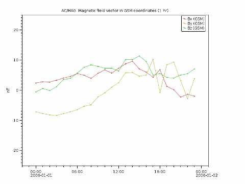

Autoplot Application (#{tag})
 jnlp WebStart : Open JDK and Java 8 through Java 11 launch mechanism, 64-Bit Java will improve capabilities.
jnlp WebStart : Open JDK and Java 8 through Java 11 launch mechanism, 64-Bit Java will improve capabilities.
 Single-Jar : .jar files can be launched on Windows and Mac, and contain a shell script for launching on Unix computers.
Single-Jar : .jar files can be launched on Windows and Mac, and contain a shell script for launching on Unix computers.
 dmg: a self-contained installer for Mac computers. (Paused for now, please use single-jar.)
dmg: a self-contained installer for Mac computers. (Paused for now, please use single-jar.)
 exe: a self-contained installer for Windows computers. (Production releases only)
exe: a self-contained installer for Windows computers. (Production releases only)

One of my covid projects was to finally track down this strange bug, where sometimes in automatic testing autoranging would be off by an hour. Happy New Year!
Autoplot allows plotting of data from many data sources, including remote CDF files and HAPI servers.
Datasets are identified with URIs, and by the URI's extension, data are loaded into the internal data model. Data are then
displayed by guessing the rendering method and axis ranges to provide a reasonable, useful view of the data. Data can then
be additionally processed with other operations like smooth and FFT, and Jython scripting provides a capable programming environment.
This is the Autoplot v2023a branch. This is an update to the production version containing bugfixes and minor new features.
Java 8 is now required.
Run with 1GB of memory to support 32-bit Java versions, and run off of ci-pw build server: autoplot_1GB.jnlp
Bugfixes (2023-01-03 r26868):
- 2497: Allow trivial calculations, such as "PWD+..." to be in getParam calls.
- 2496: track down where order preceding units conversion can affect result of conversion by a trivial amount, which might be amplified in testing.
- 793: swe19970812.nc?Time was broken because the non-digit whitespace was needed for the logic.
- Image render type autorange detects log spacing in axes.
- NetCDF/HDF files can contain formatted ISO8601 again.
- vap+hapi:http://amda.irap.omp.eu/service/hapi?id=ace-epam-ca60¶meters=Time,ace_epam_ca60_he&timerange=2022-06-16 showed where kernel-rebinner wasn't expecting a bins dataset.
- bug with das2server when "vap+das2server:" was entered, as with File->Add Plot From->Das2Server.
- 2491: plot( uri, timerange, monitor ) is supported.
- RTEs are sent to cottagesystems.com, not jfaden.net, to work around SSL certificate issue.
- 2490: renderType propagates though binary operations, because histogram vanish would dissappear when divided.
- corrections to parsing of "|histogram(2022-09-29T08:36:00Z,2022-09-29T10:07:00Z,1 min )" which supported spaces in some places but not others.
- correction to change which broke completions for "ds=getDataSet('https://<C>')"
- don't paint the DasAxis when the initial resize hasn't happened.
- Remove redundant "range" and "scale" label from undo list. Correction to where undo wasn't kept.
Older Bugfixes (2022-11-29 r26816):
- Das2Server editor would do web request on event thread, which can hang the GUI.
- correction to histogram dialog when "manual" is selected. Thanks, Sadie!
- new code checking for "NaN to NaN" in DatumRange didn't consider that Datum might be time location.
- Das2Stream correction to "property yValidMin should be type Double" where it can also be a Datum.
- Correction to support gitlab.com filesystems.
- 2488: Run batch tools time range generation supports orbit numbers. Thanks, Sadie!
- 2488: script update flashes blue, not red, since red is alarming. Thanks, Sadie!
- LIMIT_HUGE_DATASET increased to 1000M points from 100M. Thanks, Kristoff!
- Catch runtime error when non-existent directory is entered in PNGWalk tool. Thanks, Sadie!
- binding two pngwalks immediately after starting them result in runtime error. Thanks, JM!
- Indicate to the scientist that Run Batch supports concurrent runs (by holding shift).
- 0039: revisit scan next/prev buttons on axis.
- Correction to handling of $ref in HAPI, code assumed ref would be within structure and not array.
- 2483: TCA ephemeris loads incorrect time initially, blocking correct load.
- 2481: ASCII file multi-field times with tab delimiters can now be read. Thanks, Bill!
- Improve feedback when PNGWalk setTimeRange is called but images do not contain URI templates like $Y$m$d.png.
Features:
- ScriptGUIServlet uses new TimeUtil.js to properly handle next/previous.
- KernelRebinner supports rank 2 bundle of X,Y,Z.
- new min, max, and extend autorangeHints.
- boundsDataset command allows bounding boxes to be created without scripts.
- 793: handle nominal data in NetCDF (and HDF5). Thanks, JM!
Less recent features:
- "Plot Style" submenu renamed "Plot Element Type", since "Plot Style" is used elsewhere and it's a poor name anyway.
- bounds renderer supports bounding interval time series and output of contour (trajectories).
- new array-of-bounding-boxes dataset scheme, supported in the bounds renderer.
- bounds renderer supports polar plot annotations, array of bounds, and different hashes.
- allow export resizeOption="resize" to avoid constant querying which prevents scripts from running.
- DDataSet addValue method checks for zero and returns trivially without mutability test, since this happens often.
- New kernel spectrogram rebinner is available, where points are spread out and mixed together.
- dataset command handles DatumVector class, which is an array of Datums.
- Jython editor "jump to" includes methods within classes.
Feedback on the function and quality of this release is greatly appreciated!
Data is input from:
- ASCII files (.dat,.txt)
- CSV files (.csv)
- Binary files (.bin)
- CDF files(.cdf)
- PDS4 files (.lblx)
- Excel spread sheets (.xls)
- das2Streams (.d2s or .das2Stream)
- HAPI Servers (vap+hapi:)
- CDAWeb data server (vap+cdaweb:)
- das2servers (vap+das2server:)
- QStreams (.qds) (serialized version of internal model QDataSet)
- Plasma Wave Group das2 Server
- NetCDF files (.nc,.ncml)
- HDF5 files (.h5,.hdf5)
- DODs servers (.dds)
- Cluster Exchange Format files (.cef)
- Fits Format Files (.fits)
- Images (.jpg, .png, .gif)
- Wav audio files (.wav)
autoplot.org is the website containing
more information than this launch page.